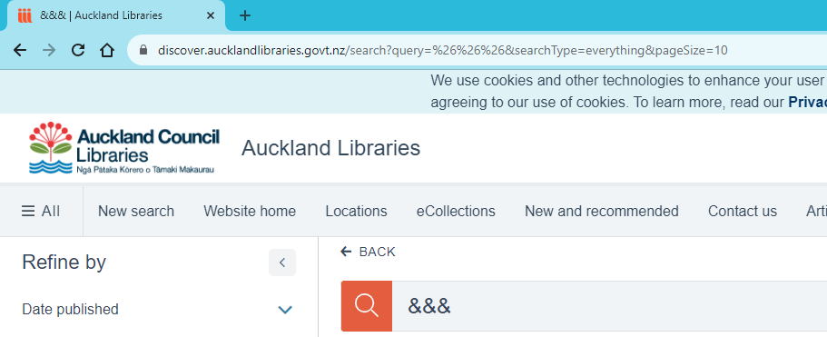
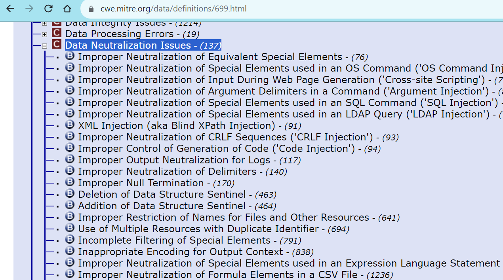
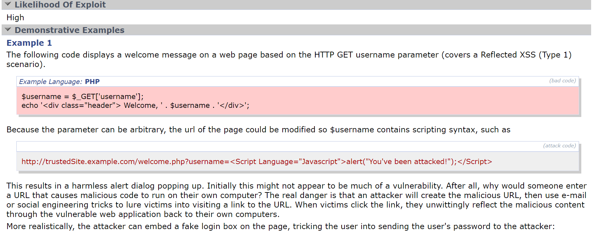
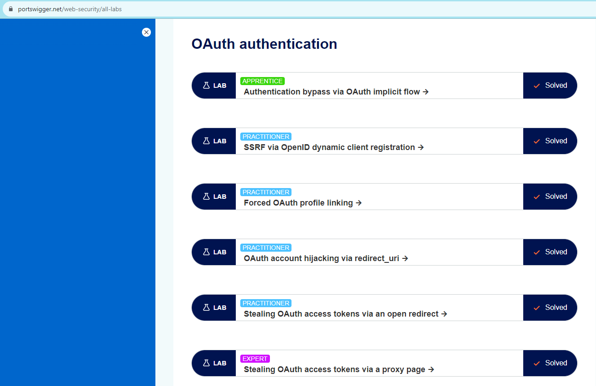

Security is hard for those that do it, and even more so for those that are looking to make a start in breaking and defending systems for the good of themselves and others. There are a ton of resources online about how to generically break into cybersecurity, however I wanted to switch it up and write a brief essay around getting into web application security! With this getting right into DeTaIlS
Being the critical thinker you are, I bet you are asking "Well, why should I follow such a specific area of cybersecurity?". That's a great question, and you should feel great for asking such a question. My reasons in response are:
Now that we have the what and why, behold the following table of contents that will guide you down the path of good webapp-ing. If you can consume and understand all of the following resources, you will have enough knowledge to say you can security test websites at a semi-professional level.
Okay so let's get real top level on you, and think about how this whole web and websites thing came to be. The start date for the internet (i.e., The Web) has a number of dates however it was invented by a lot of people included a Tim Berners-Lee and the official birthday of the internet is 1983 (we are skipping shit with the Cold War, CERN, etc.).
Fast forward a bunch and boom! Internet! So now we have a bunch of computers:

Which are connected to to one another and more importantly to servers, which are bigger computers that server up websites via the HTTP protocol:

Now that server might be in another country, or the same country through luck or the use of a CDN. Some things that generally happen is:
You will use a browser to view websites and jam in the address or look one up for a site.
There is a technology called DNS which stands for Domain Name Service. This takes a domain name and converts it to an IP address
The website https://tryhackme.com will get converted to an address of a server thanks to DNS.
This IP could be a Web Application Firewall, The web server directly, a proxy, CDN, either way it gets you to the front door of the site.
Your web requests and responses got from one end to the other thanks to TCP/IP, HTTP, DNS, and even something called BGP. BGP will route from internet router to internet router to get the packet from client to server!
Want to see an internet?! Open up your command prompt/terminal/whatever (google this step if you don't know) and run
the following command:
This is enough for knowing how the internet works, however feel free to look more into this.
Okay so now the meat of the matter. Usually a website can range from a very thing (like this site which is HTML and one line of CSS), or something written with authentication, authorisation, frontend features, integrations, tracking, and more.
Usually the things that are used to build a website are known as a Tech Stack, I'll enlist the expertise of Jeff Delaney as you watch this lovely little 11 minute 19 second video on Tech Stacks
Now that you know what tech stacks are, and roughly how websites are built (at least at an architectural level a little bit). We should talk about HTTP methods.
So before we did talk about that fact that the HTTP protocol is paramount in running websites (should be a giveaway in the URL). There are a number of methods in HTTP called GET POST PUT DELETE PATCH and maybe one or two others I am forgetting about.
When I make a request to a web server, I will use a method like let's say POST (usually used to edit something). I'll
put in the URL I am making the request to. I might also have some HTTP headers which are key value pairs of info
like I might have one for authentication like token: jaslkdfjalkfsjdscd that proves the request is me.
Finally I will have HTTP body information that has what I am submitting.

Now your message can return with 200 okay, 404 not found, or whatever with information on the page load. In essence this is how all websites work.
A core thing we should also mention is browsers. Browsers pay an important part about the website thing and the security thing. Browsers can be intercepted to allow us to modify the request of the website, we can use development tools in the browser, etc. As a security person IT IS VITAL THAT YOU TEST WEBSITES PAST JUST THE BROWSER.
Oh another thing that might be obvious as well unless you're a bit of a dumb dumb is that websites don't work on a single page (there are some exceptions called Single Page Applications), however let's not get into that, usually when you have a URL you have the first part telling you whether it is HTTP or secure HTTP https://, after this is the domain name cool.website.com (note: The cool part is a subdomain off the website.com domain), and then you will have a subdirectory like /book and then you might have a thing called a URL parameter which is an piece of information about a thing for the site ?bookId=1337. Put this together and you have a pretty complex and neat website URL https://cool.website.com/book?bookId=1337.
Let's go to the Auckland Library and key in a book
Using the paragraph above, you can detect this, and also notice some website options can be set in the URL. What if I wanted to return double the amount of books on the page? What was I searching? So much information can be discovered by the URL itself.
Now one thing I didn't mention is URL encoding, so when you send a request, some special characters are important (i.e., &). Improper encoding can lead to security vulns, or the request not being sent properly.
As you can see on the above, the URL parameter has an & character to spread out the URL parameters, so what if we try searching for '&&&'?
As you can see here, the URL parameter is encoded as %26 which is URL encoding. Base64 is something you'll also encounter as an encoding method during your travels however just think of encoding as that thing that helps the browser and client send data better-er between one another. Good websites will hide away the encoding to the normies, and you'll only ever see it if you intercept requests or view the URL when a thing is being encoded there.
Okay so to drive down at least some very basic things about how websites work, I have the following videos from ByteByteGo to give you. Give them a watch, and then with this out of the way, let's get into the web vulnerabilities section.
Most web applications have the same things, are built a complex stack, and are made by fallible people. It is no surprise then that web applications naturally have common vulnerabilities that come up time and again.
Now most people will start you on the classic OWASP Top 10, you can and should Google that however nay, we are going to go through something which in my opinion is better-er! And this is the CWE - Software Development List.
If you visit the website, it'll be worth noting that this isn't just for web software, however if you expand on things. You'll find more than just injection as weakness, let's say you go into Data Neutralization Issues - (137) you'll find a trove of areas to test
As you can see, you can find a lot more than a more simplistic table of ten vulns. With a bit of reading and understanding you'll have a whole trove of things up your sleave to do. For instance going into. For example going up onto CWE-79: Improper Neutralization of Input During Web Page Generation ('Cross-site Scripting')
This page will give you POCs, OWASP references, relevant publications, and more. This can be a real life saver when you are looking at things to get into.
For a quick note on web application vulnerabilities, although the list can be very large and daunting, there are a number of very common vulnerabilities that are seen throughout the internet in 2023, although the OWASP 10 will have you convinced that their list is the defacto, I want to break down what I have experienced myself as three things the beginner can test and look out for, in order:
'/()"; characters and the like
being reflected back as code instead of text if formatted properly. This allows hackers to inject code and do
malicious things like redirect the user to a phishing page, steal cookies, and make the user do another request.
Now that you have a list of ways on how you can pwn a website, how websites work from a basic understanding and where they came from. Let's cap this crash course out with learning about the tools you might need to PWN a website, and where you can learn website hacking.
Congratulations if you have read through this far, you're doing awesome and you should feel awesome. Now that you have the basics down and know a few basic hacks, let's tool about getting you some cyber weapons and a range to fire . The first thing you want is a web application proxy attack tool. The defacto standard is Burp Suite by Portswigger which can be found HERE. The other contender for the start of your journey is the more open source, less popular, but equally as valid OWASP ZAP, or Zed Attack Proxy, which can be found HERE. There are lots of web application security scanners however these tools are great to start off with instead of using a whole suite of tools due to these proxy attack tools being able to enable you do to multiple things like:
As you can see, the tools can be rather complex. I won't describe how to use Burp Suite's Repeater, or discuss how to look at the ZAP Cockpit, or Bambda's, Turbo Intruder, etc. etc. That part I'll leave to the next place, the bootcamp that you will learn a few attacks and go from there.
The Portswigger Web Security Academy is made by the same people that created the Burp Suite tool. Here you can create a free account. And from here I recommend going through and looking at topics, learning paths, and overall exploring vulnerabilities we discussed previously.
It should be noted that although they will say that you need to have a Professional Burp Suite license, this is far from the truth. It is entirely possible to do the labs without a pro copy (or at least looking at the 150-ish labs I've done on it). The trick is to expand out of the cookie cutter solutions and to think about how you could perform the same attack with different tools like ZAP, HTTPDump, JWT Tool, and others.
Now, if you have gotten to this part. I just want to let you know that you are in the 1% of people when it comes to understanding how web security works. Congratulations! Now go forth and find some vulnerabilities, you'd be amazed at what you find!